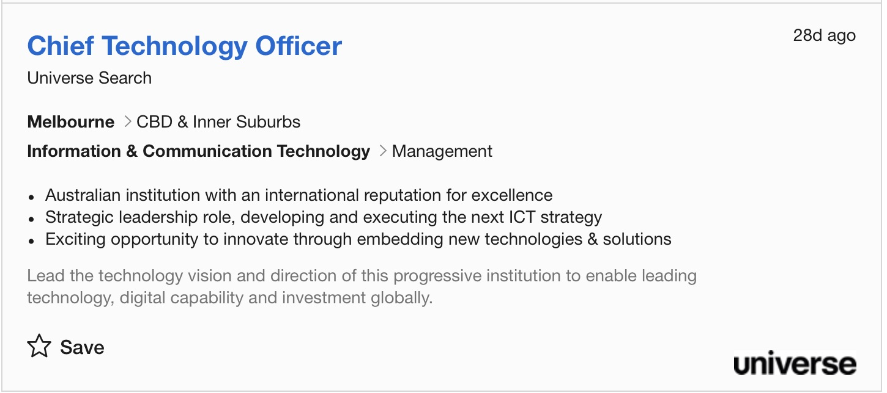
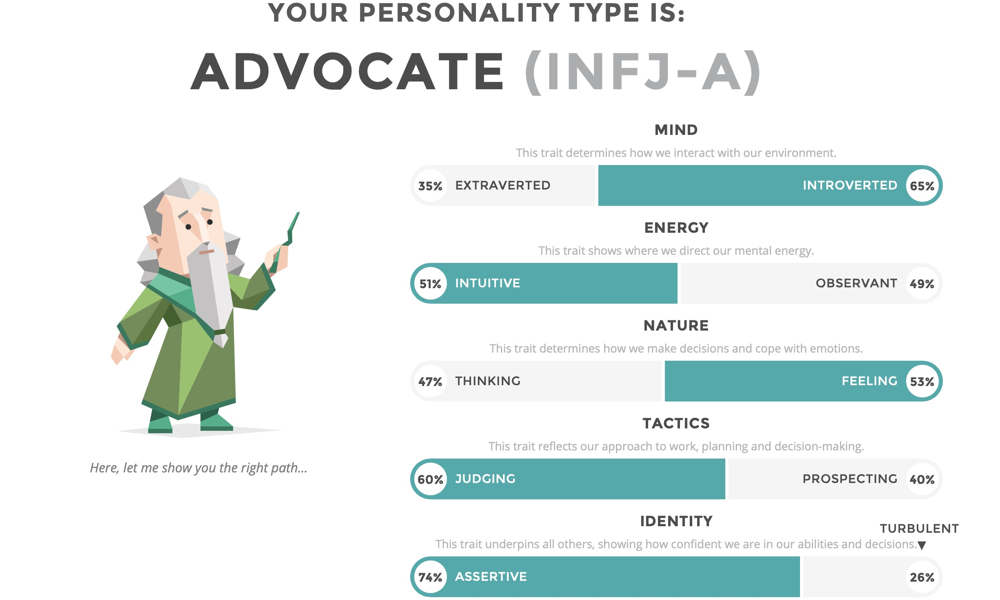
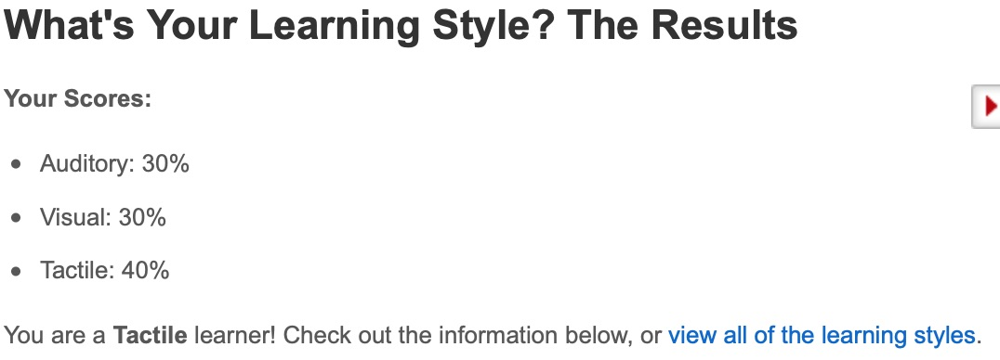
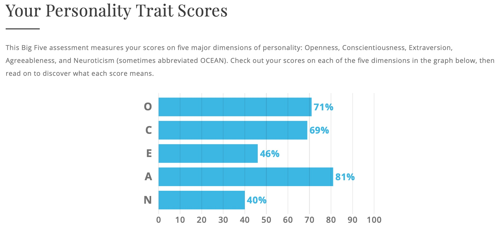

Personal Information
My name is Caner Peler and my student code is, s3782695 and you can contact me via email, s3782695@student.rmit.edu.au. I am an 18 year old male whom was born in Australia, 08/09/2000. My nationality is Cypriot Turkish, which is an island country which is an Eastern Mediterranean and the third largest and third most popular island in the Mediterranean. It is located to the south side of Turkey.
My education journey had started ever since I was in kinder learning the basic fundamentals of problem solving with blocks, I think… because it was so long ago. I Started prep at Mackellar primary school when I was 5 and finished primary school in the year of 2012. Then the following year I began secondary college at Copper field college and finally graduated in 2018.
And now I’m currently studying at RMIT the Bachelor Of Information Technology. I know how to fluently speak, Turkish and English. Interestingly something not many people don’t know about, even my friends is… that Ive had plastic surgery. This had happened when I was 11 years old and I was riding a bike on gravel, and I fell off my bike leading me to scraping my entire left knee open and needing to get a surgery.
The hole I had in my knee was almost too wide to a point I was going to need to get a skin Kraft. But luckily it wasn’t needed, but on the unfortunate side I have a nerve issue on my left knee were I have minimal sense’s, but at leat I cant feel pain in my left knee now ;).But i still enjoy playing footbal.
Interest In IT
Im interested in IT, as it has made an indescribable impact to the world. But most of us don’t realise it. In almost everyones life, their daily routine has an attached technology to it, wether from electronic cars, smartphones and the internet. Life was liveable before we had this technology, but it has made our actions much more efficient. But what interests me the most about Information technology is the fact that it's applied to everything, it's universal. Technology is used for everything even health care which blows my mind. I feel like technology almost holds everything together in our life as were constantly using it in every shape and form.
Im interested in IT, as it has made an indescribable impact to the world. But most of us don’t realise it. In almost everyones life, their daily routine has an attached technology to it, wether from electronic cars, smartphones and the internet. Life was liveable before we had this technology, but it has made our actions much more efficient. But what interests me the most about Information technology is the fact that it's applied to everything, it's universal. Technology is used for everything even health care which blows my mind. I feel like technology almost holds everything together in our life as were constantly using it in every shape and form.
Iv’e been interested in tech ever since I was young. I think my passion had sparked after I had owned my Very own PS2. Because I would question my self, how could listen machine allow me to play so many games on it such as spider man and Simpsons hit and run. As I got older, I was motivated and even more intrigued by the tech legends, Steve jobs and Bill Gates as they were constantly surprising the world with revolutionary tech advancements. Steve Jobs has had created such a well known tech device, the iPhone which 9.4% of the entire population owns it. And Bill Gates is known as the head Tech billionaire whom has influenced 1.5 billion individuals to install windows.
My own IT experience would only be building my own PC for the first time. I chose to come to RMIT as in its name it has Technology, Royal Melbourne Institute of Technology. Additionally Ive had a relative whom completed a bachelor of technology at RMIT and I was told good things about the university and its better for my travel convenience's. I expect to learn new things in my study which I have never really thought about to further expand my knowledge of tech and hopefully be able to narrow down to something specific about tech that I like to then get a job.
Ideal Job

A chief technology officer is an executive-level position in a company or other entity where your occupation is focused on scientific and technological issues within an organisation. So your’e responsibilities as the highest levelled position is to be in charge of developing the company's strategy for using technological resources. And ensuring technologies are used efficiently, profitably and securely.
Im interested in this job title as I like to be in a position were you have to take calculated risks especially when your held accountable to all managements on the technology aspects. I believe this is the perfect job title only after when I have had experience in the technology field in order to build my expertise and experience for the job. The high passion and likings of have of technology makes me believe I will be a perfect candidate for such a superior role. But I am aware i'll need to work and start from the bottom to earn my position. Ive chosen this high role as my goal, so there is something I’m motivated about to help me work hard with passion in the tech fields.
The qualifications required for this job title is a bachelor degree in IT, computer science or engineering. There is also experience required in the field and that could be from 5-11 years depending on your degree and skill you have. There are several skills required for a CTO (chief technology officer). But the key 13 skills listed by the most successful of them are, Constant Education- to be constantly updating your tech knowledge as its constantly growing. Diplomacy And Patience- as patience is required when taking the risks to prevent the capital downfall. Communication and team skills- These are essential are for all jobs but as a CTO your decisions will affect a lot of others.
So understanding their perspectives is important. But the core skills required is coding and time management. I currently don’t have all the requirements to achieve my job title. But I’m on the right path. The bachelor I’m studying at the moment (Bachelor of Information technology) allows me to have the qualification once finished studying the bachelor in 2021. But an addition to my qualification’s which would allow me to become a CTO a lot quicker would be also be obtaining a Master in technology. I believe I have some of the skills such as time management and communication with my peers, but I still need to gain the skill of coding ignorer to for-fill the skills required. In order for me to gain the experience Id need to join the work force once I’ve obtained my bachelor and gradually work my way up the ranks.
My plan to get to achieve a role as at CTO with my current stance goes something like this. To graduate with my bachelor of Information Technology. Then to join the tech field as a system administrator to gain experience. While gaining experience in the working field Ill additionally start to studying a masters degree in technology to gain further skill and qualifications which will shorten the period of wait time to get to a CTO position. I'll also gain the required skills through my courses and and personal study so I am suited with the correct skills and continue to work in the field till I achieve my goal.
Personal Profile
Myers-Briggs test-

To be honest the results aren’t that important to me as its just an online test. And a short series of questions cant define an individuals personalities. However based on my results, as an advocate I’m a great team player as Im motivated it others, based on the descriptions. But however I should be looking at for, being compromised by a more ethically relaxed colleague as this apparently causes an unhealthy version of me. So when I’m creating groups I’m meant to not be one where there is someone like that.
Learning-style test -

I knew I was already a more of a hands on learner so the results don’t really surprise me. These results can be important for those who don’t know their preferable leaning style, and this can help the identify and give the an edge ahead. This result influences my group behaviour to be the one whom is hands on rather the one whom researches. When taking this result as consideration for making a group I would surround myself whom strengths are my weaknesses such as someone is good visually or auditory to create a good balanced meta.
The Big 5-personalities test -

This test is important for me as it gives me an overview of some of my aspects and on looks of some stuff. It shows to me that all by positives is greater then my weaknesses which makes me want to continue with the thoughts in my life the same way. These results prove to me that in a team environment I’m very agreeable and open therefore identifying I will get along fairly well with everyone and will be able to co-operate with my peers as accordingly. When taking this account in group works I believe I could be the one who is the one whom takes leadership, as I’m strongly open allowing for everyones ideas to be collaborated.
Project ideas
My project is to create an app for the gamers, were they are able to track their game progresses and stats for their variety of games in just one app. I want to create this app as my project as I as an individual whom is a self proclaimed gamer, gets frustrated about the fact that I need to download multiple if not serval different apps that do the same thing but for a different game. But I want to be the one whom creates the solution to this. The way I plan to develop this app I to almost have it as a library were it displays the multiple different games you select that you play. And when you elect the game who simply login with the same login as your game allowing the app to fetch your stats and game progress. Additionally id like a feature were it also show games updates and news. And eventually grow it to a social media app for gamers were they can share their stats with their friends.
I find this project as motivational for myself as I’m legit a gamer. I play games everyday on my pc and find the fact that games have played a big role in my life, in fact for most gamers as we all find enjoyable. I find this apps going to become useful as there is more than 2.2 billion gamers. Meaning this project will be focused on many individuals and I believe it can make a positive impact to the gaming community. Gamers also play multiple games and additional would like stat tracks in all in one app instead of needing multiple different ones. So this app would be addressing the problem of the need of several apps. And replace it with one that does it all.
My project is to create an app for the gamers, were they are able to track their game progresses and stats for their variety of games in just one app. I want to create this app as my project as I as an individual whom is a self proclaimed gamer, gets frustrated about the fact that I need to download multiple if not serval different apps that do the same thing but for a different game. But I want to be the one whom creates the solution to this. The way I plan to develop this app I to almost have it as a library were it displays the multiple different games you select that you play. And when you elect the game who simply login with the same login as your game allowing the app to fetch your stats and game progress. Additionally id like a feature were it also show games updates and news. And eventually grow it to a social media app for gamers were they can share their stats with their friends.

Sed lorem adipiscing
Integer volutpat ante et accumsan commophasellus sed aliquam feugiat lorem aliquet ut enim rutrum phasellus iaculis accumsan dolore magna aliquam veroeros.

Accumsan integer
Integer volutpat ante et accumsan commophasellus sed aliquam feugiat lorem aliquet ut enim rutrum phasellus iaculis accumsan dolore magna aliquam veroeros.